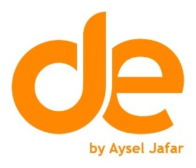

A1-dən C2-yə qədər bütün söz kartları bir yerdə: alman və ya azərbaycan dilində axtarın, səviyyəyə görə seçin, 🔊 ilə tələffüzə qulaq asın. Səviyyə etiketinə toxunsanız, sözün olduğu mərhələyə keçəcəksiniz.